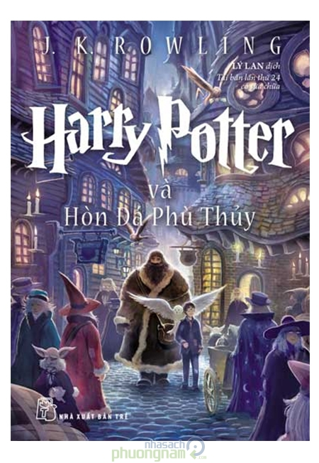

<div style="margin-top:1em;border-radius: 10px;padding-left: 0.8em;padding-right:0.8em;">
  <div class="row">
    <div class="col-sm-3">
      
    </div>
    <div class="col-sm-9" style="border:0px solid gray">
      <!-- info cho book -->
      <h3>Harry Potter và hòn đá phù thủy</h3>
      <h4 style="color:#32373b">Tác Giả <a href="#"> J.K.Rowling </a></h4>
      <!-- the hien gia ca va bao nhieu cuon -->
      <h5 class="title-price"><small>Giá</small></h5>
      <p>
        <span style="font-size: 2em;font-weight: bold; color: rgb(187, 47, 47)">300.000 V </span>
      </p>
      <div class="section" style="padding-bottom:20px;">
        <h6 class="title-attr"><small>Số lượng</small></h6>
        <div>
          <div class="btn-minus"><span class="glyphicon glyphicon-minus"></span></div>
          <input value="1" />
          <div class="btn-plus"><span class="glyphicon glyphicon-plus"></span></div>
        </div>
      </div>

      <!-- Botones de compra -->
      <div class="section" style="padding-bottom:20px;">
        <button class="btn btn-success"><span style="margin-right:20px" class="glyphicon glyphicon-shopping-cart"
            aria-hidden="true"></span>Thêm vào giỏ hàng</button>
        <h6><a href="#"><span class="glyphicon glyphicon-heart-empty" style="cursor:pointer;"></span></a></h6>
      </div>

      <div class="col-xs-9">
        <ul class="menu-items">
          <li class="active">Chi tiết sản phẩm</li>
          <li>Quyền lợi người mua</li>
          <li>Nhà Xuất Bản Kim Đồng</li>
          <li>Giao hàng</li>
        </ul>
        <div style="width:100%;border-top:1px solid silver">
          <p style="padding:15px;">
            <small>
              Harry Potter và Hòn đá Phù thủy (tiếng Anh: Harry Potter and the Philosopher's Stone) là tác phẩm đầu
              tiên trong bộ truyện Harry Potter gồm 7 tập của nữ văn sĩ người Anh J. K. Rowling. Quyển sách đã được
              xuất bản ngày 30 tháng 6 năm 1997 bởi nhà xuất bản Bloomsbury. Đây là một tập truyện quan trọng, bởi nó
              đặt nền tảng cho 6 tập tiếp theo. Nó giúp ta bước đầu khám phá thế giới Pháp thuật của Harry Potter, làm
              quen với các nhân vật chính, địa điểm, với một số thuật ngữ... Tập đầu tiên này đưa ra những câu hỏi chưa
              có câu trả lời, bằng những dấu hiệu cho những tình tiết trong các tập tiếp theo, tạo cho độc giả sự tò
              mò.
            </small>
          </p>
          <small>
            <ul>
              <li>Được dịch từ nguyên bản từ nguyên truyện của J.K Rowling</li>
              <li> còn đau </li>
              <li>MicroUSB and USB connectivity</li>
              <li>Interfaces with Wi-Fi 802.11 a/b/g/n/ac, dual band and Bluetooth</li>
              <li>Wi-Fi hotspot to keep other devices online when a connection is not available</li>
              <li>SMS, MMS, email, Push Mail, IM and RSS messaging</li>
              <li>Front-facing camera features autofocus, an LED flash, dual video call capability and a sharp 4128 x
                3096 pixel picture</li>
              <li>Features 16 GB memory and 2 GB RAM</li>
              <li>Upgradeable Jelly Bean v4.2.2 to Jelly Bean v4.3 Android OS</li>
              <li>17 hours of talk time, 350 hours standby time on one charge</li>
              <li>Available in white or black</li>
              <li>Model I337</li>
              <li>Package includes phone, charger, battery and user manual</li>
              <li>Phone is 5.38 inches high x 2.75 inches wide x 0.13 inches deep and weighs a mere 4.59 oz </li>
            </ul>
          </small>
        </div>
      </div>
    </div>
  </div>
</div>